Framework
Framework
Environment
The first layer in your security model is the ability to access a OneStream environment, and a company may have one or multiple environments to meet its business needs. OneStream security is organized by environment.
If you have one environment for OneStream (e.g., PRD1), then you have one security Framework that supports all application(s) that exist in that environment. If you have multiple environments (e.g., PRD1 & DEV1), your OneStream security is specific to each environment as shown in Figure 2.1 below:
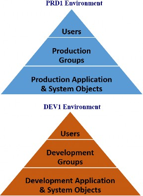
Figure 2.1
Within each environment, there is a SQL database referred to as the Framework Database, which is where OneStream’s security resides to support all application(s) within that environment. In Chapters 5 and 6, we will go into more detail about the tables that exist within the framework database to support a customer’s system and application security.
Using the house analogy, think of an environment like a gated community. Within a gated community (e.g., PRD1), there can be multiple houses (e.g., application(s)). The first layer of defense to your home (e.g., application) is, therefore, the entrance gate to the community (e.g., PRD1 versus DEV1). Someone may have an access card to get into the community, but they may only have an entrance key to a specific house(s) within that community. Your framework security is the same. It is the first layer to your overall OneStream security and determines who can get in through the first gate.
A system administrator can see this by logging into the OneStream environment and going to the System tab. They will notice that it remains the same no matter which application they are logged into within that environment. The security framework is specific to all application(s) within that environment.
If the system administrator logs into a different environment, the security framework and thus its System tab are separate for that environment, and all application(s) that exist in that additional environment. It is important to note that you can migrate security from one environment to another, which will be covered in Chapter 8.
Framework
Types of Authentication
OneStream provides several flexible security authentication methods to meet customers’ needs, including, but not limited to, MSAD, LDAP, Azure AD, Okta, SAML 2.0, PingFederate, and Native authentication. OneStream supports Native authentication, authentication with one external identity provider, or both Native and external provider authentication methods.
What method is chosen is not dictated by OneStream but is dependent upon a company’s preference. This is normally addressed at the time of the initial environment setup, but can also be adjusted later.
This book is not intended to be a reference guide for the authentication process, but is merely to make you aware of the different options available, as this is the first layer of security. You will need to work with OneStream’s Cloud Team and reference the Installation and Configuration Guide for more information on how to set up authentication methods.
Framework › Types of Authentication
SSO
OneStream supports external single sign-on (SSO) user authentication. SSO can be via an external authentication process – where user names and passwords are not stored within OneStream – or where a native user name and password are stored within OneStream.
If an external SSO is used, the user experience at initial logon to OneStream will be dependent upon the company’s chosen authentication provider. For example, a company may require multi-factor authentication, prompting a user to provide a unique code or approve authentication on their mobile device before being allowed to pass into OneStream’s environment.
Framework › Types of Authentication
Native
If a company chooses to allow the Native authentication logon method to OneStream, a user name and password will be stored within OneStream’s framework database.
There is a toggle setting of True/False in the Application Server Configuration Settings that controls whether a company permits native authentication to OneStream. These configuration settings can only be accessed by OneStream Support for cloud customers and are typically determined at the time of the initial environment setup, but can be later changed. If a company has selected True to Enable Native Authentication, then native users can be set up and work within their OneStream environment.
Using a Native authentication method means that all OneStream user names and passwords are maintained inside your OneStream framework database. This means that SSO, in accordance with your company’s authentication methods, is not being used, and instead, you rely upon user setup and password maintenance within your OneStream framework database.
There are a handful of properties, as shown in Figure 2.2, that can be set by OneStream Support to control the password security of your native users. You will want to work with OneStream Support if any of these requirements need to be changed to satisfy your auditor’s or company’s IT policies.
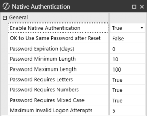
Figure 2.2
Framework › Types of Authentication
OIS
OneStream Identity Server (OIS) is an SSO service available for customers hosted in the OneStream Azure Cloud environment. The OneStream Cloud Team will manage the initial configuration to use OIS at the time a customer’s environment is set up; for existing customers, the Cloud Team can assist with the conversion to OIS.
OIS can support many different forms of external identity providers (including native, OIDC, or SAML 2.0), depending on the customer’s preference. If OIS with SSO is selected, external provider user accounts are passed through to OneStream for authentication and access. The benefits of using OIS include flexible authentication to multiple identity providers, the management of identity providers and personal access tokens by the customer, the ability for native users to reset their own passwords, and a streamlined login process. OIS governs logon for the Windows app, Browser UX, Excel Add-In, and API access. For more information on OIS, refer to OneStream’s Identity and Access Management Guide.
Framework
Application Server Configuration
There are specific Application Server Configuration Settings that control what users can and cannot do within their OneStream environment. We have already mentioned one of these options, which is the True/False toggle switch to allow Native Authentication, but there are many other options that are set at the environment level and control what is allowed within OneStream.
In this book, I will touch upon those (Figure 2.3) that are relevant to security, meaning those settings that will or will not allow an administrator to take certain actions within a OneStream environment. The settings described in detail to follow are typically limited to a company’s OneStream administrator and are not often changed once the initial environment setup is complete. But we will still cover them, so a system administrator can understand their implications on OneStream security.
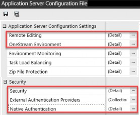
Figure 2.3
Framework › Application Server Configuration
Remote Editing
Within the Remote Editing section, shown in Figure 2.4, you can find True/False toggle switches for the following:
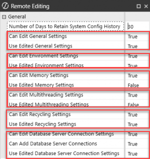
Figure 2.4
These settings will determine whether an administrator can perform these actions from within your OneStream application. If any of these are set to False, the customer will need to reach out to OneStream Support to make a change.
If any of these are set to True, those options will be editable by a customer’s OneStream administrator from within the System tab of their OneStream environment. A new page is exposed on the System > System Configuration tab, which will show additional pages for any options set to True:
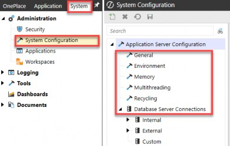
Figure 2.5
Framework › Application Server Configuration › Remote Editing
General
When True is enabled in Figure 2.4 for General Settings and a security group has been assigned on the Security > System Security Roles page for the Manage System Configuration, the following page is exposed within your OneStream environment:
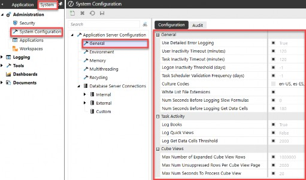
Figure 2.6
An administrator can choose to edit the settings above (by unchecking the box in front of the setting and making changes), some of which directly impact the environment’s security.
For example, User Inactivity Timeout (minutes) can be viewed as a security risk. By default, this is set to 120 minutes of inactivity before OneStream will require a user to log back in. However, once the General settings are set to True, a system administrator can edit this setting, as well as the others listed in Figure 2.6. It is important to remember that these settings apply to the entire environment and are not specific to any one application. They are considered system-level environmental settings.
Framework › Application Server Configuration › Remote Editing
Environment
When OneStream Environment settings are enabled as True (Figure 2.4) and a security group has been assigned on the Security > System Security Roles page for the Manage System Configuration, the following page is exposed within your OneStream environment:
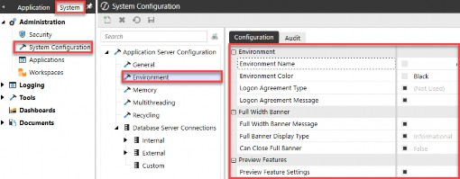
Figure 2.7
Again, these settings will determine whether an administrator can perform these tasks from within your OneStream application System tab. If any of these are set to False, the customer will need to reach out to OneStream Support to make a change. If any of these are set to True, those options will be editable by a OneStream administrator from within the System tab of their OneStream environment.
The ones relevant to environment security are the Logon Agreement Type, Logon Agreement Message, and Full Width Banner Message. These items can be displayed to a user when they log into the environment and require interaction, such as the agreement or acknowledgment of a message.
Framework › Application Server Configuration › Remote Editing
Memory
By default, the memory settings are typically set to False when a new environment is set up and relate to system performance. Because these settings directly impact an environment’s performance, they should only be edited by someone familiar with their implications. There are no settings within this section that directly impact environment security; therefore, I will not cover them. Should they need to be edited, you will want to work with OneStream Support to make changes.
Framework › Application Server Configuration › Remote Editing
Multi-Threading
Likewise, and by default, multi-threading settings are typically set to False when a new environment is set up and relate to system performance, not system security. Because they directly impact an environment’s performance, these settings should only be edited by someone familiar with their implications.
Framework › Application Server Configuration › Remote Editing
Recycling
Over time, server memory may become fragmented, which can affect performance and stability. The default configuration of a daily recycling process is standard, and thus the recycle settings are typically set to True by default when an environment is set up, and thus editable by a system administrator from within the OneStream application.
When True is enabled (Figure 2.4 once again) for Recycle editing and a security group has been assigned on the Security > System Security Roles page for the Manage System Configuration, the following page is exposed within your OneStream environment:
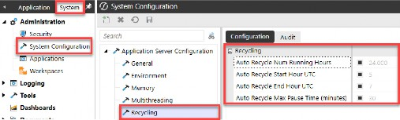
Figure 2.8
These settings again relate to the environment’s performance and stability, and do not impact the environment’s overall security. For more information regarding all these settings, please see the OneStream Design and Reference Guide.
Framework › Application Server Configuration › Remote Editing
Database Server Connections
The Database Server Connection settings are typically set to True by default when an environment is set up, and thus editable by a system administrator from within the OneStream application. When the Database Server Connection Settings are True and a security group has been assigned on the Security > System Security Roles page for the Manage System Configuration, the following page is exposed within your OneStream environment:
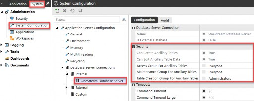
Figure 2.9
The three most important security settings on this page pertain to the Ancillary Tables. We will review these settings more in Chapter 7 when we cover Solution Exchange security for tools requiring additional table access. What is important to note here is that you can edit the security groups assigned to access, maintain, or create ancillary tables within your environment from this Database Server Connection page.
Framework › Application Server Configuration
Environment
Within the OneStream Environment section of your Application Server Configuration Settings options, you can find True/False toggle switches for the following:
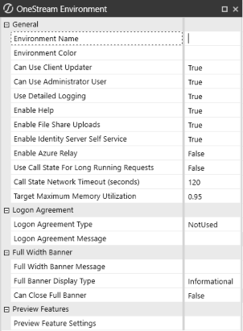
Figure 2.10
An administrator can work with OneStream Support to edit the settings above, some of which directly impact the environment’s security. For example, Can Use Client Updater or Can Use Administrator User or Enable File Share Uploads are security-related items under your OneStream Environment section. But these are not exposed from within the OneStream application (with the exception of Environment Name and Environment Color), and a system administrator must open a case and work with OneStream Support to make modifications to these.
Framework › Application Server Configuration
Security
The Security setting of your Application Server Configuration Setting options is where you can set a Logon Inactivity Threshold (days). If set to -1, no logon inactivity threshold is enforced. If set to 90, in contrast, any user who has not logged in during the past 90 days will be unable to access OneStream without an administrator’s intervention.
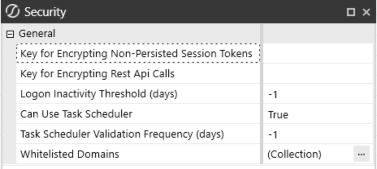
Figure 2.11
Now that we have covered the framework database and some high-level environmental security options and settings that pertain to an entire OneStream environment, let’s move on to the process of setting up users and groups and granting access to application(s) within an environment.
Framework
Users
After establishing the first layer of security for an environment (the authentication method), the next step is to set up users. At the heart of your OneStream security model are Users and Groups. Users are placed into one or more security groups. Security groups are assigned to application and system objects or nested inside other security groups. Security groups, and how they are nested and assigned to application and system objects, determine what a user can or cannot do in OneStream. The security pyramid for an environment is shown in Figure 2.12 and starts with users, placing users in group(s), and then assigning groups to application and system objects, or embedding groups in other groups:
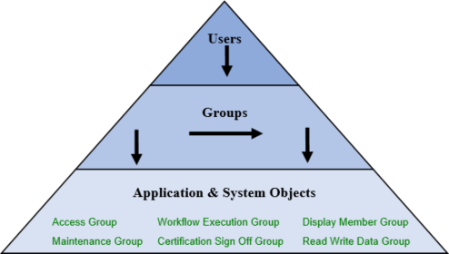
Figure 2.12
What is important to understand with users is that they cannot be individually provisioned to application or system objects, meaning you cannot go from the top of the pyramid to the bottom level of application and system objects. Users must be placed into security groups in order to inherit rights to application and system objects.
The starting point for setting up users (and groups discussed later) can be found on the System > Security page within your OneStream environment:
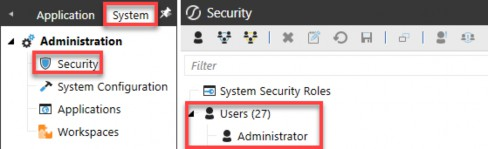
Figure 2.13
Every OneStream environment contains a default native user called Administrator, which is the only user that exists at the initial installation and creation of your OneStream environment. This default user name will always appear as the first user in your list of users within OneStream, regardless of alphabetical sort order (as in Figure 2.13).
A random password generator is used to generate a long, complex password for this user, which is then stored in OneStream’s encrypted key vault in Azure. OneStream Support uses this ID when you open a support case and grant them permission for troubleshooting or upgrades.
You can change the password or disable this user, but it is not recommended, as it could cause delays in receiving support should you open a case for an issue or upgrade. If you need to change the password, you will want to coordinate with OneStream Support. You will need to schedule a time when your environment will be offline for approximately two hours, to get this password changed and restored in the encrypted key vault.
What is the purpose of this default Administrator user, apart from allowing OneStream to support your environment as needed? This user name is unaffected by inactivity thresholds and password expiration requirements that prevent users from logging in after a specific period elapses or being forced to change their password. Also, it cannot be deleted. This is the one user who can always manage artifacts, data, and tools within an environment. If you look at this default user name, you cannot add or remove any groups from this user (Figure 2.14). It is the one user name that has complete access to your OneStream environment. Think of it as a non-expiring system user.
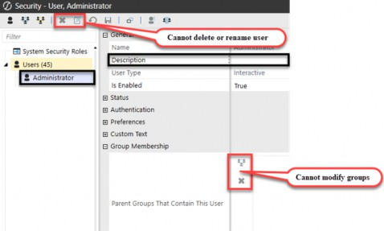
Figure 2.14
For cloud customers, in addition to this one administrator user name, OneStream Support will set up one or more company contacts as initial users who can validate your environment setup and authentication. These initial users are individuals who will act as a company’s OneStream administrator(s) going forward.
Once your authentication is established and a company contact has verified a successful login, you are ready to create additional users. At this point, OneStream Support is no longer involved in the process of setting up additional users, as that responsibility falls on a company or partner resource. Should further support be required, a case will need to be opened with OneStream Support and support access enabled, allowing OneStream Support to log in to your environment using the Administrator user.
There are three ways you can set up users.
You can set up users manually, using the Create User icon: in the ribbon along the top of the System > Security page. You can set up one user by copying from another user with the Copy Selected Item icon
Lastly, users can also be set up en masse, using a security template found in the Productivity section on the OneStream Solution Exchange:
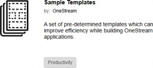
Figure 2.15
Whether you choose to set up users one-by-one, via a copy method, or using the security template, you will be required to fill out certain properties. The following section describes the user properties, which ones are required, and how they impact an individual user.
Framework › Users
User Properties
When setting up users, below is a list of user properties, some of which are required and others which are optional:
| General | |
|---|---|
| Name | nvchar100 Name that will appear in all OneStream logs, and be available in business rules, Cube Views, and dashboards via the substitution variable ( Tied to a unique ID behind the scenes. This is not the name used for external authentication. OneStream stores and references a UniqueID behind the scenes, which will not change when you rename or delete a user. |
| Description | nvchar200 A non-unique identifier that can be included on security reports. |
| User Type | Classification that controls the license type that governs the user’s access to artifacts and OneStream offerings. It does not control the user’s security, but classifies them according to a dropdown list that includes: • Interactive: Can use all features and tools. • View: Can access data, reports, dashboards, and associated database, but cannot load, calculate, consolidate, certify, or change data. • Restricted: Cannot use some Solution Exchange solutions due to contractual limitations. • Third-Party Access: Can access applications with a third-party application by logging in using a named account. Cannot change data, modify artifacts, or access the Windows application or a browser-based application. • Financial Close: Can use Account Reconciliation and Transaction Matching Solution Exchange solutions. |
| Is Enabled | A True/False toggle switch. Setting to False will prevent a user from logging in (e.g., if a user has been terminated). |
| Authentication | |
|---|---|
| External Authentication Provider | nvchar500 If using external authentication, there will be a dropdown list of providers set up in your OneStream server configuration: 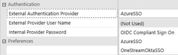 |
| External Provider User Name | nvcharMAX If using external authentication, this is required to be the user name that is recognized by your external provider. If external authentication is not used, this should be left blank. |
| Internal Provider Password | Only used if (Not Used) is selected under External Provider User Name, meaning you are using a native user name to log in to OneStream. You will set a password in OneStream that will be required to be changed the first time this native user logs in. Native password expiration and other requirements can be set in the OneStream Application Server Configuration settings: |
| Preferences | |
|---|---|
nvchar2000 Email address that can be leveraged if you set up certain notifications within OneStream; for example, due date notifications in Task Manager or notifications via a BR. | |
| Culture | A dropdown list of language(s) set up in your server configuration. It will default to the primary language if there is only one setup. If a user is set to a culture other than the default culture, this will allow them to see alternate language descriptions for any dimension members in Cube Views, dashboards, etc., where secondary descriptions have been added. This culture setting does not change menu navigation. |
| Grid Rows Per Page | A dropdown list between 10 and 1,000, with a default value of 50. Controls the number of rows that are displayed on the screen in a Cube View or grid component before a page break. The preference is to set it to a maximum of 1,000 unless connectivity or screen resolution is slow. This number can be reduced to improve the performance rendering of Cube Views and grids, if needed. |
| Custom Text | |
| Text 1 – 4 | Fields that can be used to categorize users on reports or drive certain behaviors within OneStream. |
| Group Membership | |
| Parent Groups That Contain This User | While not required, as all users are a part of the ‘Everyone’ security group by default, this is the security group(s) that will control user access in OneStream. |
Figure 2.16
What is most important from Figure 2.16, apart from establishing a user’s ability to login, will be a user’s Group Membership properties. By adding security groups to a user, you are determining what that user will be able to do within that environment and any application(s) in that environment. The user will inherit the privileges of the Parent Groups That Contain This User by adding those groups to this user.
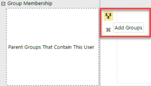
Figure 2.17
It is important to understand that a user can be in more than one group. If a user is in only one group, they will be able to do what that particular group is allowed to do. If they are in multiple groups, they will inherit the privileges of both groups if the groups are mutually exclusive. If the added security groups have overlapping privileges, the user will inherit the rights of the least restrictive group.
For example, if a user is in a view group for all data and a modify group for specific data, they will inherit modify rights to the specific data while retaining view rights to all data. This means that the least restrictive group (modify for specific data) will supersede the more restrictive view rights for all data, in the case of that specific data.
One additional item of note is that if the native administrators group is added to a user, no additional group membership is necessary. As we will discuss more in the Security Groups section, the native administrators group has full access to everything. Native administrators bypass all security (except Nobody); therefore, it is redundant for that user to be added to any other groups, with two exceptions that we will discuss in Chapters 5 and 6.
Lastly, if no groups have been added to a user, then – at most – that user will be able to authenticate to an environment and is considered part of the Everyone security group. Typically, as you build your application security, as discussed later, very few doors will be left open to everyone.
Using the home security analogy, once you move into your new home, you are not likely to leave your exterior doors unlocked. The same is true for your OneStream security, so if a user has no group membership, other than initially authenticating to the environment, they will not be able to log into an application or access anything additional within that environment.
Framework › Users
Deleting vs Disabling
Now that we have discussed how to create users, you may be wondering how to remove or deactivate users. There are two ways you can remove a user’s ability to log into a OneStream environment; you can disable a user by setting the Is Enabled property to False (see Figure 2.16), or you can delete the user with the Delete Selected Item icon: at the top of the System > Security page.
Deleting a user from a OneStream environment will not directly impact that user’s audit history. Any task activity and error log history for that user will be retained (in accordance with your retention periods) as those items are maintained in the database tables using a Unique ID behind the scenes. There is no risk of losing an audit trail of that specific user if deleted. However, deleting a user does mean that user name will no longer appear on the System > Security tab from within OneStream. The security audit reports discussed in Chapter 8 show a list of deleted users, so – from an audit perspective – you still have an audit trail of deleted users.
Disabling a user means that user will still appear in the user list on the System > Security tab from within OneStream. If needed, the user could be re-enabled at a future point in time. Disabled users also appear in a list on the security audit reports discussed in Chapter 8, so there is still visibility as to which users were disabled, and when. And all task activity and error log history are also retained for disabled users. Both methods, whether disabling or deleting, free up the user license.
So, which is recommended? Disabling users is the safest and most conservative approach to maintaining your OneStream security.
Why? The one gotcha with deleting a user is that it frees up that user name (not the external authentication name, but the user name inside OneStream), and it will not appear on the System > Security page in your OneStream environment. Therefore, you could set up a new user (or rename an existing user) with the same name as someone who previously existed.
Using our house analogy, this is a front yard versus back yard problem! All audit logs and task activity performed previously under the deleted user will show up under that recycled user name on the front-end. That can be misleading as those actions were taken by a different user under a different, unique user ID behind the scenes.
However, in the application, the unique user ID is not displayed on audit reports, task activity logs, etc. Therefore, it would give the impression that the new user or renamed user performed those actions.
If you instead chose the safer option of disabling the user, that user still appears on the System > Security tab on the front-end. As such, that user name is not available when you set up new users or rename existing users. This keeps your front and back yard tidy as it enforces the uniqueness of user names (which are always unique in the back-end tables with their unique ID) and prevents you from recycling user names (on the front-end).
If your company has a retention policy around audit logs such that – after a certain period of time – audit logs are purged, then at that same time, you could go through disabled users and purge (delete) them periodically as well, since the consequence of misrepresenting which user did what within the logs would no longer be a relevant argument for keeping all user names.
Of course, the safest option is to disable and not delete users, but the consequence of this may be an ever-growing list of user names on the front-end in your System > Security tab. It is up to you to decide if your company is of the mindset “When in doubt, throw it out” (aka delete); or if your company prefers the “I may have use for that again someday, so I will keep it just in case” (aka disable).
Framework › Users
Support vs Application Users
It is important to distinguish between support users and application users. Support users are those set up for a customer or partner that allow them to access OneStream’s Customer Support Portal for items like knowledge base articles, One Community, Navigator, the Solution Exchange, and support cases:
Figure 2.18
That user access is gained via a OneStream OKTA account sign-on and is maintained outside the OneStream environment by an account maintenance team within OneStream. It is the access for a customer or partner that will allow them to use OneStream-related content, per their license agreements.
For example, an IT resource or a OneStream project manager may have access to the OneStream Customer Support Portal to track enhancements and open cases for their customer. However, that IT resource or project manager may not actually be a OneStream application user.
Application users are users who are set up inside a customer environment with access to authenticate to an environment and potentially access applications within that environment. While there are overlaps in these user groups, their security and authentication are maintained independently, with one maintained by a OneStream account maintenance team and the other within a customer environment. This book focuses on the latter security or application user security.
Should you require changes to your support users, you will need to open a case with OneStream’s account maintenance team.
Framework
Groups
As mentioned in the introduction, every OneStream environment has three native security groups: Everyone, Nobody, and Administrators. The properties of these three groups cannot be changed (as shown in Figure 2.19), except for having the ability to add users to the Administrators group. And these three groups will always appear as the first groups in your list of security groups, regardless of alphabetical sort order.
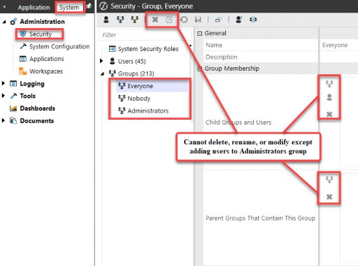
Figure 2.19
The Everyone group refers to everyone who has passed the first layer of security and authenticated to your OneStream environment. Once a user has passed the first layer, even if they have not been placed into any other security groups, they will still be able to do anything assigned to Everyone within your environment.
So, what is typically assigned to Everyone? By default, most application security roles and application user interface roles are all initially set to Administrators. This means even if a person passes the first layer of authentication to an environment, unless they have been granted additional security groups, they will not be able to log in or perform any actions within the environment.
While it is true that application security and user interface roles are initially set to Administrators, it is also important to understand that as you create new artifacts or objects within an application (e.g., new Cube Views, data management sequences, or dimension members), those objects default to Everyone. This may sound counterintuitive, but it does make sense in the overall context of your security layers. Because Everyone cannot log into an application by default, as new objects in that application are created it does not matter, therefore, that those objects default to Everyone.
Reflect again upon the home security analogy. If a person does not have a key to the front door of your home (e.g., an application security role), it is of no consequence that you have left the interior doors unlocked (e.g., new artifacts). Just to reiterate here, OneStream is the same in that as new objects are created, they default to the Everyone security group; application security and user interface roles default to Administrators, so this is of little consequence.
Next, the Nobody group means even those individuals who have passed the first layer of security and authenticated to your OneStream environment, regardless of whether you have placed them into any additional security groups, cannot access artifacts set to Nobody. This includes the native Administrators group; it truly does mean nobody! This security group is used sparingly throughout your OneStream environment, but there are a handful of situations where this group is assigned to objects, and we will get into those in later chapters.
By assigning the Nobody security group, if someone needs to have access to this object, it requires deliberate action. You must first change the security group from Nobody to another group before someone is able to access that object. So, think of it as protecting Administrators from themselves.
For example, say there is an old well on your home site that you do not want anyone accessing because it is dangerous. Therefore, you put a tight cover over it with a padlock. Closing up that old well makes it a deliberate action if someone needs to gain access. They will have to remove the padlock first and then pry off the cover before they can gain access. This defines the Nobody group.
Lastly, the Administrators group is the most important one in your environment. This is the native OneStream group that gives an individual(s) the keys to the whole kingdom. Again, this may sound counterintuitive, but it does serve an important purpose. This group will typically consist of just a few (depending on your organization’s size) individuals who are well-trained in OneStream. Do not forget that also included in this Administrators group is the Administrator native user we discussed earlier. In Chapter 4, we will delve more into how to segregate administrative users by application or function, but understand that you will want at least one user in this group.
When OneStream Support initially stands up your environment and sets up the original company users, it will place those first users into the Administrators security group. This is done before the baton is passed to the customer or partner so that the customer or partner has full access to their own environment.
So, now that we have discussed the three native security groups, let’s move on to groups that you will create yourself.
Framework › Groups
Group Properties
When setting up security groups, you will use the Create Group icon: on the System > Security page. When you create a group, there is a list of properties, some of which are required and others that are optional:
| General | |
|---|---|
| Name | nvchar100 Name that will be assigned on system and application objects and/or nested in other security groups. Tied to a unique ID behind the scenes. |
| Description | nvchar200 A non-unique identifier that can be included on security reports. |
| Group Membership | |
| Child Groups and Users | While not required to be filled out, this box typically has users and groups assigned. Groups and Users added here inherit the rights of the group into which they are placed. |
| Parent Groups that Contain This Group | Adding Groups here means that the selected group has rights over these groups. If this box does not contain any groups, this typically means the selected security group is attached to objects in the system or application. |
Figure 2.20
What is most important from Figure 2.20 is Group Membership, and how to add users to groups and nest groups within other groups.
If you are like me, you have probably stared at the Child Groups and Users and Parent Groups That Contain This Group a million times and cannot remember into which box to add users, groups, or both to accomplish your goals!
I will lay out a systemic approach to these two items. Generally, there will always be something in the Child Groups and Users property, but there will not always necessarily be something in the Parent Groups that Contain This Group property. This may seem backward, as not everyone has children, but every child has a parent. So, let’s take a closer look at how we assign group membership to users and groups with a simple use case.
Take a read security group for German entities. We will call this group 004_ENT_DE_READ (Chapter 3 will discuss naming conventions). Assume that you have assigned this German read security group to the Read Data Group property for all your German entities.
Now you are ready to assign Group membership. Assume a couple of things:
You have one user (Heidi Klum) who has read rights to German entities.
You have one EMEA read group (
004_ENT_EMEA_READ) that will also have read rights to German entities (in addition to other European countries).
To achieve both of these things, you put the user Heidi Klum and group
004_ENT_EMEA_READ into the Child Groups and Users box one (as per Figure 2.21).
Any user or group you add to box one inherits rights to that security group. Think of this as nesting users and groups into box one, as children of the Germany read group.
Here is how this appears from the perspective of the German Read Security Group:
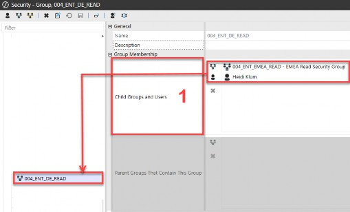
Figure 2.21
In the case of the German read group, the Parent Groups That Contain This Group box was not used. This is because, in our use case, Germany is the lowest entity level to which we need to apply entity security. The German read group, therefore, does not have rights over any other groups as it is the lowest level attached to the German entities in OneStream.
Now, let’s consider what this looks like from the perspective of the EMEA read group. Let’s assume a couple of additional things:
We have three users (Brenda Matheus, Katia Schneider, and William Smith) who have the rights to read EMEA entities.
We want to give the EMEA group rights to German (
004_ENT_DE_READ), Spanish (004_ENT_ES_READ), French (004_ENT_FR_READ), and United Kingdom (004_ENT_UK_READ) entities.
First, we will start again with box one, the Child Groups and Users box. We add the three EMEA users into box one so that they inherit the rights of the EMEA read group (004_ENT_EMEA_READ). This is similar to adding Heidi Klum to the Germany read group, as we saw above. Users in box one are children and inherit the rights of the security group into which they are placed.
Next, we can move on to box two (Parent Groups That Contain This Group). Groups in box two are the reverse logic. Any groups nested in box two are groups over which the current parent group has rights.
Figure 2.22 shows how this looks from the perspective of the EMEA Read Security Group. Again, the users with rights to EMEA are placed into box one. The groups over which EMEA has control are placed into box two.
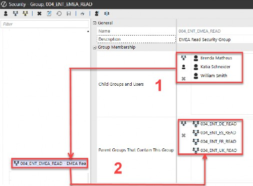
Figure 2.22
In the case of the German read group, box two was not used; however, because we wanted to create access control rights for the EMEA group over the German, French, Spanish, and UK entities, we did fill the Parent Groups That Contain This Group box for the EMEA read group.
Another way to think about the child groups versus parent groups is as shown in Figure 2.23. Child Groups and Users inherit the rights of the example security group.
And the example security group, in turn, is the Parent Groups and controls the rights of the other groups. Again, it may seem counterintuitive, but think of it as children inherit from their parents (box one), and parents control their children (box two).
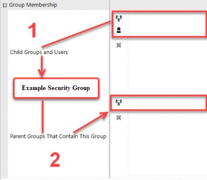
Figure 2.23
In subsequent chapters, we will delve into naming conventions around setting up security groups, how to assign security groups to application and system objects, and how to achieve your security model by nesting users and groups. But, for now, understanding the basic principles around setting up users and groups is key.
Once again, let us review the ways in which users and groups are placed into security groups.
Option 1: Navigate to each group into which the user or other groups need to be placed, and add the child user or group to each group individually:
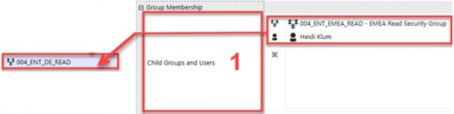
Figure 2.24
Framework Option 2: Navigate to the parent group, and add all necessary users and groups to it:
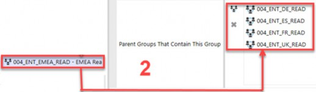
Figure 2.25
Both methods will yield the same result; users will inherit the rights of the groups into which they are placed, and groups will have access rights over other groups into which they are placed.
I prefer the second approach (parent groups) as that is a more all-encompassing approach. Typically, you will know into what groups a user should be added, so it is fewer clicks to navigate to that user and add all the groups to that user at once. The same applies to nesting groups. Once again, you generally know which groups a parent group should have access to, so if you navigate to the parent group, you can add all groups over which it should have control in one step.
However, as with many things in OneStream, there is more than one way to achieve the desired result, and nesting groups and users are no exception. A third way to grant users access to security groups is to copy the user’s access from another user, as shown in Figure 2.26.
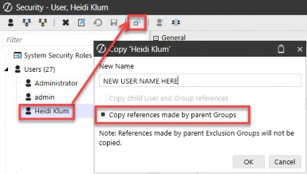
Figure 2.26
By using the copy icon: on the user toolbar and checking the box for Copy references made by parent Groups, the new user will inherit the same security as the user being copied. This third option is a way to shortcut a user’s setup, when you already have other users working and know that your new user needs to be identical to an existing user. Just know that there are many ways to achieve the same result in OneStream!
Framework › Groups
Exclusion Groups
The last type of group that can be set up in OneStream is called an Exclusion Group. These groups are not common but are utilized within your environment when you want to grant privileges by exception to already established groups. For example, you may have a security group with 100 users, and you may want to grant all 100 users, with the exception of two users, access to a particular object. Rather than having to create a group with 98 users that can access the object and another group with the remaining two users, you can use an exclusion group to grant access by exception.
To create one of these, you use the Create Exclusion Group icon: on the System
> Security page. When you create a group, there is a list of properties, some of which are required and others which are optional:
| General | |
|---|---|
| Name | nvchar100 Name that will be assigned as security group on system and application objects and/or nested in other security groups. Tied to a unique ID behind the scenes. |
| Description | nvchar200 A non-unique identifier that can be included on security reports. |
| Group Membership | |
| Child Groups and Users | While not required to be filled out, this is where you will permit and deny access for other security groups. Access is granted or denied based on the order in which the groups or users appear in this property. |
Figure 2.27
In keeping with our previous example, let’s set up an exclusion group for EMEA that includes all users except for one user:
We have three users (Brenda Matheus, Katia Schneider, and William Smith) who have the rights to read EMEA entities.
We want to give the EMEA group rights to German (
004_ENT_DE_READ), Spanish (004_ENT_ES_READ), French (004_ENT_FR_READ), and United Kingdom (004_ENT_UK_READ) entities.We want to have an exception where William Smith cannot view Spain’s entities (
004_ENT_ES_READ).
To achieve this, we will set up an Exclusion Group (999_ENT_ES_ExceptWilliam) which appears as follows:
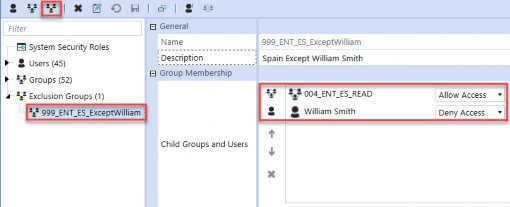
Figure 2.28
We first grant the Spain read group (004_ENT_ES_READ) access (appears first in Figure 2.28), and then we restrict William Smith’s access to Spain (second in Figure 2.28). So, in this case, William Smith can be in the EMEA read group, which will give him access to all countries in Europe except Spain (004_ENT_ES_READ).
By attaching this exception security group (999_ENT_ES_ExceptWilliam) on all Spanish entities, everyone else in the EMEA Read group will retain their rights to Spanish entities, and William Smith will be denied.
While Exclusion Groups are rare, they can be used in an efficient manner to grant or deny rights to large groups of users and other security groups on an exception basis.
Framework
Key Takeaways
There are several key takeaways thus far:
The need to balance data governance, ease of use, control, and maintenance will impact the complexity of your security model.
OneStream security is flexible and can change over time.
Security resides in one framework SQL database per environment.
Security includes several layers: environment, users and groups, system and application objects, metadata, and workflows, which work together to control access.
There are three native groups: Everyone, Nobody, and Administrators, and one native user, Administrator, in every customer environment.
The native administrators group has full environment access.
Users cannot be provisioned to objects; users inherit rights to objects via group membership(s).
Users can be in one or many groups.
Users inherit all rights of the least restrictive group if groups overlap.
Groups are assigned to objects.
Groups can also be nested into other groups.
Now that we have an overview of some security basics in OneStream, in the next chapter, we are going to take a deeper dive into the questions a partner or customer may want to ask to understand how complex (or simple) their security model should be. We will get into details around naming conventions, best practices, and common types of users and security groups that may be utilized in a security model.